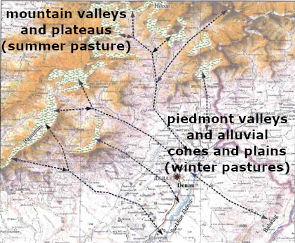

A game of…
chairs, Musical Chairs
A theory-building Agent-Based approach to agro-pastoral landscapes in Eurasia
Andreas Angourakis, Agnese Fusaro, Verónica Martínez Ferreras, Josep M. Gurt Session #672 - CAA @ EAA: Computational Models in Archaeology
available at https://andros-spica.github.io/EAA2018_simulation/


Explaining land use patterns
Land use patterns can be understood as outcomes of a series of contingencies at different scales and different dimensions of human behavior and its environment.


(NRCS_Photo_Gallery).jpg)


{kind=link}
{kind=link}
{kind=link}
Set of possible states in terms of...
- Proportions
between land use classes - Stability
- Distributions
of land use classes - Centralization
(decision-making) - Specialization
(lifestyles)
- Intensification
(labor, resources) - Development
(productivity, institutions, craftsmanship) - Wealth
accumulation and distribution - Resilience
In preindustrial Eurasia...
Subsistence strategies produced mainly two distinguishable land use classes, farming and herding
Shades between these may fit in one or another class, depending on the strategies effective impact on the landscape (do they generate/use farms or pastures?).
Implicit models
Separate niches

Interaction is independent of land use
Overlapping niches

Stakeholders must cooperate or compete for land use
Farming

Herding

Stride, S. (2005). Géographie archéologique de la province du Surkhan Darya (Ouzbékistan du sud / Bactriane du nord). Ph.D thesis, Université Paris I Panthéon-Sorbonne.
The separate niche models is not useful!
"Bad" question
Are farming-herding interactions competitive or cooperative?
"Good" questions
Through which mechanisms
and under which conditions may
stakeholders cooperate or compete?
What impact does these aspects have on the existence of certain land use patterns?
Modeling framework
- For exploring several mechanisms
- Land use competition as the core mechanism
- Progressive and modular theory-building approach
Musical Chairs model

- Limited area
- Constant pressure to expand land use classes
- Alternancy between competitive and non-competitive
- Competitive situations resolved asymmetrically
Implications of competition

- Strong bimodality
- Bias towards specialized farming economies
Musical Chairs model publications
ANGOURAKIS, A., RONDELLI, B., STRIDE, S., RUBIO–CAMPILLO, X., BALBO, A. L., TORRANO, A., MARTÍNEZ, V., MADELLA, M.; GURT, J. M. 2014, “Land Use Patterns in Central Asia. Step 1: The Musical Chairs Model”, Journal of Archaeological Method and Theory, 21: 405-425. http://dx.doi.org/10.1007/s10816–013–9197–0.
ANGOURAKIS, A. 2014, “Exploring the oases of Central Asia: A model of interaction between mobile livestock breeding and sedentary agriculture”, in Antela-Bernárdez, B. and Vidal, J. (eds.) Central Asia in Antiquity: Interdisciplinary Approaches, BAR International Series 2665, pp. 3-16.
ANGOURAKIS, A., 2016a (February 3). "Musical Chairs" (Version 1). CoMSES Computational Model Library. https://www.openabm.org/model/4880/version/1
Nice Musical Chairs model
- Limited area
- Constant pressure to expand land use classes
- Alternancy between competitive and non-competitive
- Competitive situations resolved asymmetrically